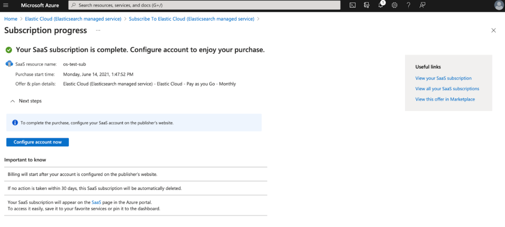
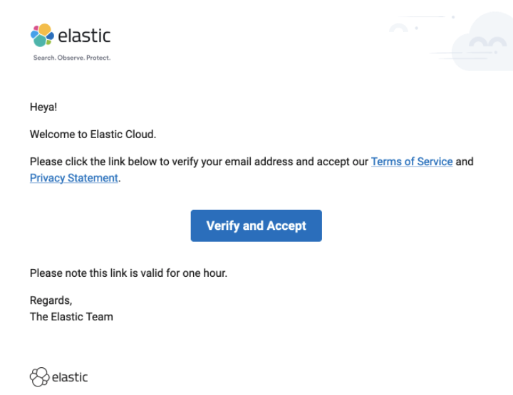

Azure Marketplaceedit
Elasticsearch is now offered as a native service in the Azure console. This deep integration provides consolidated billing with your Azure bill, simplified data ingestion for Azure logs and metrics, support for Private Link, and more.
You can immediately create Elasticsearch resources in Azure now, or learn more about the integration in our Native Azure integration documentation.
You can subscribe to Elasticsearch Service directly from the Azure Marketplace. You then have the convenience of viewing your Elasticsearch Service subscription as part of your Azure bill, and you do not have to supply any additional credit card information to Elastic.
Some differences exist when when you subscribe to Elasticsearch Service through the Azure Marketplace:
- Previous Elasticsearch Service accounts cannot be converted to use the Azure Marketplace. If you already have an account, you must use a different email address when you sign up for a subscription through the Azure Marketplace.
- There is no trial period. Billing starts when you subscribe to Elasticsearch Service.
- Pricing for an Elasticsearch Service subscription through the Azure Marketplace differs from our direct billing model and follows the pricing outlined on the Elasticsearch Service pricing calculator. Pricing is based on the Azure region, the depoyment capacity, billed per hour, as well as some other parameters such as data transfer out, data transfer internode, snapshot storage and snapshot APIs. For more details, see Billing Dimensions.
In case you encounter any problems subscribing, check our Troubleshooting section.
Before you beginedit
Note the following items before you subscribe:
- You cannot use an email address that already has an Elastic Cloud account. If you want to use the same account email address with Azure Marketplace billing, you must first change the email address on your existing account before setting up your new Azure Marketplace subscription. For instructions on how to change your email address in Elastic Cloud, see update your email address.
- You may be prompted from within the Azure Marketplace to set up a resource group. This is a standard part of the subscription process in Azure to help organize your resources.
- You may be prompted from within the Azure Marketplace for administrator approval. In this case, your Azure administrator must ensure that the Azure Policy permits the purchasing of marketplace offers. To learn more, see What could block a customer from completing a purchase? in the Azure Marketplace documentation.
Getting startededit
To subscribe to Elasticsearch Service through the Azure Marketplace:
-
Go to the Elastic Cloud (Elasticsearch managed service) page in the Azure Marketplace and click Set up + subscribe.

-
Fill in the marketplace subscription details and click Subscribe. If you have multiple Azure subscriptions configured, select the one you want your Elasticsearch Service usage to be charged to.

- Wait for the marketplace subscription to be provisioned. This can take a few minutes.
-
Once the marketplace subscription is ready, click Configure account now, which launches Elastic Cloud where you can set up your account in Elastic.
 -
Enter your details and click Sign up. Here are a few tips and items to note:
- Consider using a group email address if you plan to share the administration of the Elastic account with others.
- You cannot use an email address that already has an Elastic Cloud account.
- If you previously created an account but unsubscribed and tried to activate a new subscription, the signup page is not loaded and you are redirected to the login page. Use the email for the previously created account to log in.
- If you want to change the email address associated with an existing account, log into that account and follow the instructions to update the email address. If you need further assistance contact support@elastic.co.

-
Check your mailbox and click on the button in the email. If you haven’t received the email within a few minutes, check your spam folder.
 - When prompted, set the password for your account and keep it somewhere safe.
- You are now ready to create your first deployment.
Your new account is automatically subscribed to the Platinum subscription level. You can change your subscription level if you want something else.
Troubleshootingedit
This section describes some scenarios that you may experience onboarding onto the marketplace offer. If you’re running into issues with your marketplace subscription or are encountering technical issues, create a support case or contact support@elastic.co.
- I receive an error message telling me that I’m already signed up using an Elastic Cloud email address.
- When I click on Configure account from the Azure console, I see the Elastic Cloud login page, not the sign up page. If I sign up to a new account it is not connected to the marketplace.
- When I click on Configure account from the Azure console, I see an error: "400: An active Azure subscription already exists.
I receive an error message telling me that I’m already signed up using an Elastic Cloud email address.edit

This occurs when you attempt to sign up to the marketplace offer using an email address that already exists in Elastic Cloud, say as part of a trial account. You have a few options to work around this issue:
- Change the email address of your previous Elastic Cloud account - You can log in to your existing Elastic Cloud account and change the email address to something else. Once the email address has been changed, you can navigate back to the Azure console and click Configure account now again to finish setting up your marketplace subscription.
-
Sign up using a different email address - You can sign up to Elastic Cloud using a different email address, such as
dev-team@company.com.
When I click Configure account from the Azure console, I see the Elastic Cloud login page, not the sign up page. If I sign up to a new account it is not connected to the marketplace.edit
If you see the Elastic Cloud login page after clicking through from the Azure console, then an Elastic Cloud account is already connected to your marketplace subscription. You can log into Elastic Cloud with that account in order to continue. If you can’t remember your password, click the Forgot password? link to reset your password.
If you can’t remember which email address you used to sign up to Elastic Cloud, or you need other assistance, contact support@elastic.co.
When I click on Configure account from the Azure console, I see an error: "400: An active Azure subscription already exists."edit
This message is returned when you have already provisioned a marketplace subscription under your Azure user account. Each Azure user account can only subscribe to Elastic Cloud once. If you attempt to create multiple marketplace subscriptions, this error is shown when you attempt to configure your subscription in Elastic Cloud.
If you wish to configure multiple marketplace subscriptions, you need to use a different Azure user account to create the marketplace subscription from the Azure console. Once the marketplace subscription has been created in Azure, you can continue to configure the subscription in Elastic Cloud.